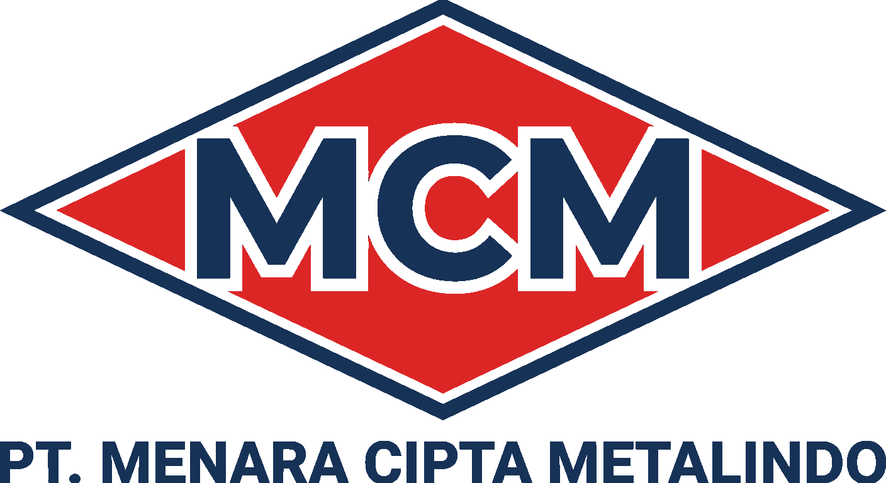
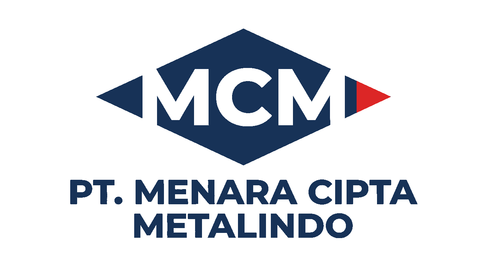
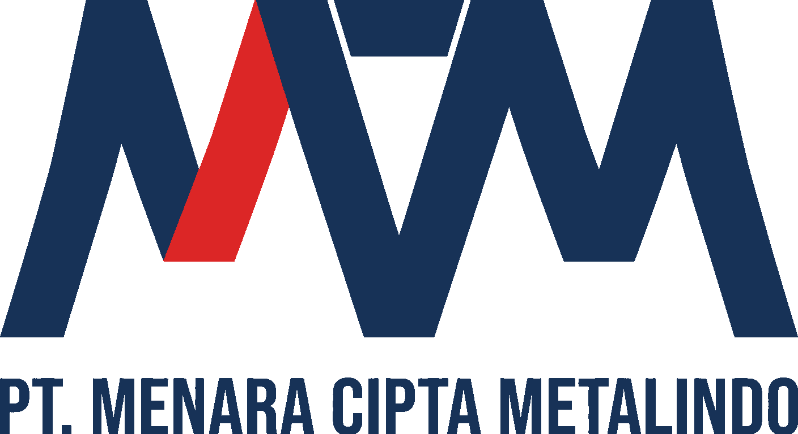
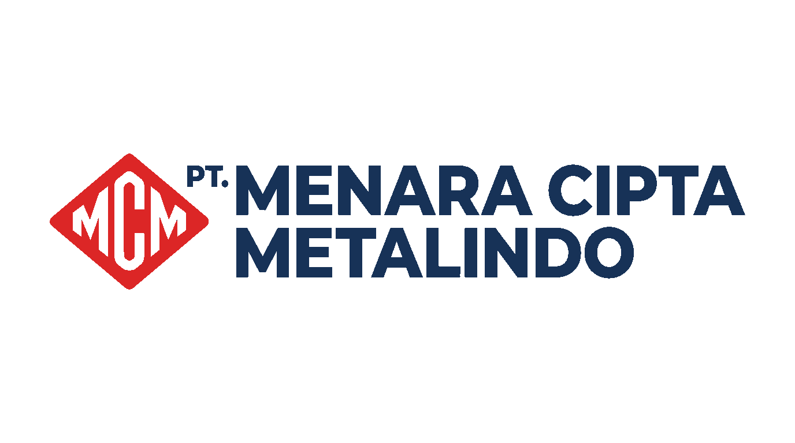
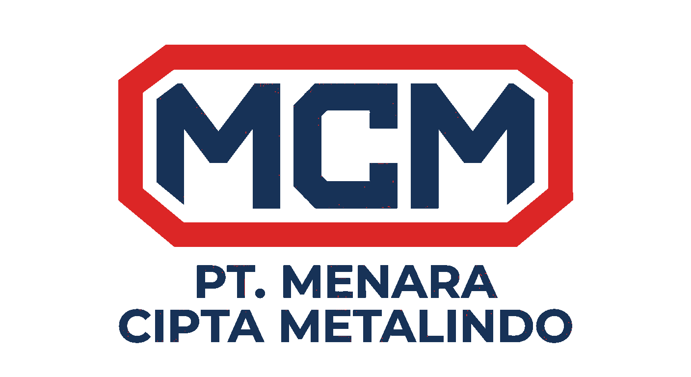

PT MENARA CIPTA METALINDO · EKSPLORASI REDESIGNLima arah logo untuk seragam baru
Revisi warna solid: merah #DC2626, biru tua #173257, putih #FFFFFF. Ketiga warna sama pada semua konsep, tanpa gradasi. Palet kerja ini belum warna resmi perusahaan. Konsep berbasis generasi AI, bukan master vektor atau file siap bordir. Detail huruf, ejaan, geometri, orisinalitas, dan kelayakan produksi perlu diperiksa sebelum finalisasi. Nomor menunjukkan arah, bukan peringkat.
KONSEP 01Evolusi logo lama

Mempertahankan belah ketupat merah dan MCM biru; arah perubahan paling konservatif.
Buka gambarKONSEP 02Diamond negatif

MCM putih pada bidang biru, dengan aksen merah; eksplorasi pemisahan huruf dan latar.
Buka gambarKONSEP 03Lipatan metal

Eksplorasi MCM geometris terinspirasi bidang logam; perubahan lebih jauh dari logo lama.
Buka gambarKONSEP 04Komposisi horizontal

Simbol di kiri dan nama di kanan; alternatif susunan untuk area yang memanjang.
Buka gambarKONSEP 05Bingkai industrial

Bingkai merah dan MCM biru tua; siluet bersudut dengan palet yang sama.
Buka gambarLangkah berikutnya: pilih arah, rapikan menjadi vektor, uji ukuran aktual dan versi satu warna, lalu validasi sampel dengan vendor seragam.